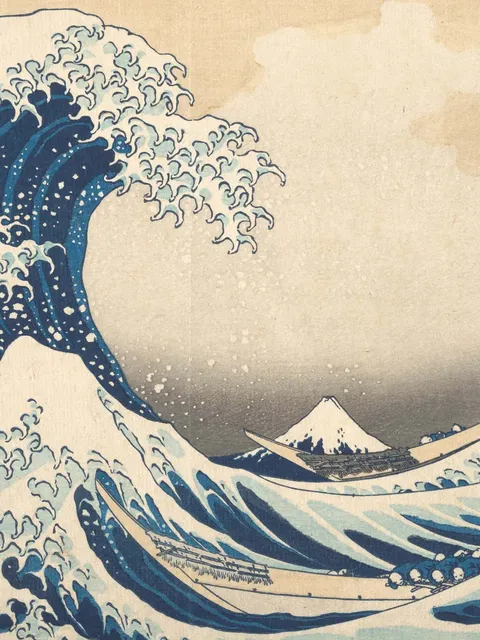

Restore real masterpieces, one piece at a time. Swap the pieces of a painting; the ones that belong together fuse with a soft golden chime. Finish the puzzle and hang the painting in your own gallery.

Hokusai · Under the Wave off Kanagawa
Every painting in the game is in the public domain and was released under CC0 by its museum: The Metropolitan Museum of Art (Open Access) and the Art Institute of Chicago. Puzzles use cropped details; each finished puzzle shows the whole work and links to its museum page.